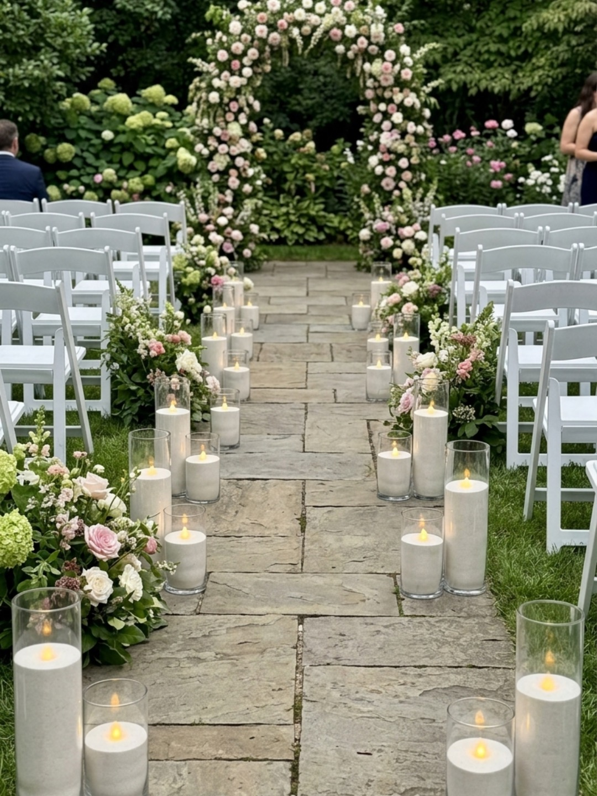

Wedding Candle Styling Ideas for Long Tables
April 19, 2026
Long reception tables work beautifully with candle styling because candles help carry warmth, rhythm, and atmosphere across a wider visual space. Instead of one central focal point, you get the chance to create a flowing candlelit line that draws the eye all the way down the table.
That said, long tables can be a little trickier than they first look. The goal is not just to add candles. It is to make the whole table feel balanced, full enough, and visually connected without tipping into clutter.
Planning a long-table layout? You can check your date and estimate your candle quantity here.
Why long tables need a different styling approach
Long tables are not styled the same way as round tables. With round tables, you are usually building one centrepiece moment in the middle. With long tables, the styling needs to flow across the full length of the table so it feels connected from one end to the other.
That is where spacing, repeated visual rhythm, and overall balance matter. If the candles are too spread out, the table can feel empty and broken up. If they are too packed together, the centre can start to feel busy and messy.
Long tables usually look best when the candles feel intentional all the way along, rather than concentrated in one heavy section.
Styling idea 1: even candle spacing along the table
One of the cleanest ways to style long tables is to repeat candles at an even rhythm down the centre. This works especially well if you want the setup to feel polished, balanced, and easy on the eye.
With this approach, the candles do not need to be packed tightly together. The strength comes from the consistency. Repeating glass candle vessels at a steady spacing can create a calm visual line that still feels warm and full once everything is lit.
This style often suits couples who want a refined look without too much layering.
Styling idea 2: clustered candle moments
If you want the table to feel a little fuller and more layered, clustered candle moments can work beautifully. Instead of placing every candle in one constant straight line, you can create small groupings along the table.
This helps the styling feel more natural and gives the eye different points to land on as it moves down the table. It can also work well if you want the candles to feel softer and less formal.
The key is keeping the clusters balanced so one section does not feel heavy while another feels bare.
Styling idea 3: mixing candle heights
Long tables often look more dynamic when the candle heights are not all exactly the same. Varying vessel heights can help the table feel more styled and less flat, especially in photos and across a large reception space.
Lustre Hire candles are sand wax candles in glass vessels, pre-filled and ready to light, which can make this kind of layered styling easier to work with while still keeping the overall look clean and cohesive.
A gentle mix of heights usually works better than a dramatic jump. The aim is visual movement, not chaos.
Styling idea 4: candles with florals or greenery
Candles can work beautifully alongside florals or greenery on long tables, but the trick is to let each element breathe. If everything is packed tightly into the centre, the table can quickly start to feel crowded.
A practical approach is to let the candles create the repeated rhythm, then weave florals or greenery around them rather than competing with them. This helps the table feel layered and soft without losing shape.
If your flowers are already quite full, you may need fewer candles than you first expect. If the florals are lighter or more minimal, the candles can do more of the visual work.
Styling idea 5: keeping it simple and minimal
Long tables do not always need to be packed full to look beautiful. A more spaced, intentional look can still feel warm, elegant, and complete.
In fact, a simpler layout often works very well if you want the table to feel clean and modern, or if you need to leave space for menus, shared dishes, glassware, or service. Minimal does not have to mean empty. It usually just means every candle is placed with more intention.
How many candles might you need for a long table?
There is no single number that suits every long table because it depends on table length, the spacing you want, and how full you want the styling to feel.
A lighter styling approach might use fewer candles spaced more generously so the table feels clean and open. A fuller look might use more repeated candles or grouped moments so the table feels richer and more atmospheric.
If you are planning multiple long tables, it helps to think about the look you want across the whole room, not just one table in isolation. If you want a starting point for quantities, our candle packages and our guide on how many candles you might need for a wedding can help you plan more realistically.
Common mistakes to avoid
A few simple mistakes can make long-table styling harder than it needs to be:
• Overcrowding the centre of the table
• Using too few candles so the table feels empty
• Making every section identical without any variation
• Forgetting to leave room for florals, menus, or food service
• Not thinking about how guests will see across the table
That last point matters more than people sometimes realise. A table can look beautiful in photos but feel awkward in real life if guests cannot comfortably see through or across the styling.
Final reassurance
The best long-table candle styling usually comes from choosing an approach that matches both the table layout and the overall wedding look. You do not need to do the fullest setup possible. You just need enough rhythm, balance, and warmth for the tables to feel considered.
Lustre Hire is a DIY candle hire business in Perth, with pickup from Bull Creek, and our ready-to-light candle setup is designed to make planning and styling feel more manageable. If you would like a better sense of the process, you can review how it works and the return side on our How to Return page.
If you want a ready-to-light candle hire option for your long-table reception, the next step is to check your date, get a quote, and book online when you are ready.
Ready to map out your tables?
Check your date, get a quote, and work out the best candle layout for your long-table setup.
Check Availability